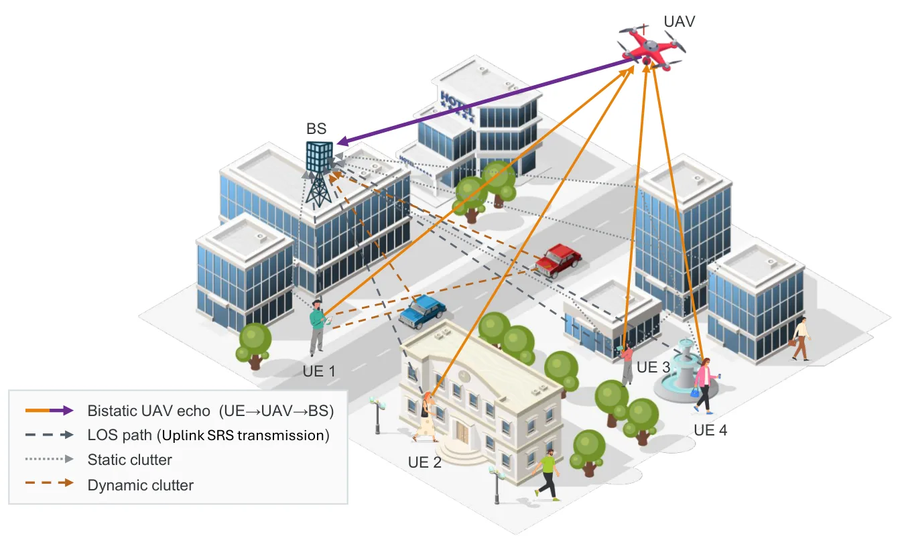
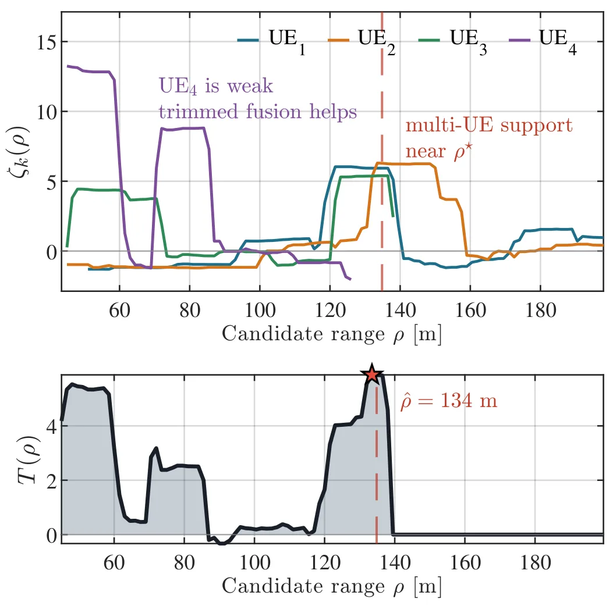

Fuse-then-Detect：利用多 UE 5G 上行信号的无源 UAV 定位Fuse-then-Detect for Passive UAV Localization Using Multi-UE 5G Uplink Signals
与城市环境无线定位、多源融合及 NLOS/杂波鲁棒性高度相关，指标明确；但目标是 UAV 无源感知而非机载自定位，需检查检测率、虚警率和真实部署条件。
一句话工作总结
先以 LOS 参考消除多 UE 上行 SRS 的同步残差，再在共享三维状态空间融合双基地回波定位 UAV。
摘要
本文提出利用多个用户设备的 5G NR 上行 SRS 对低空 UAV 进行无源定位的框架。针对每个 UE 独立振荡器和定时环带来的残余时延、频率与幅度误差，方法复用 timing advance，并通过相邻时机的共轭乘积进行 LOS 参考同步；随后在共享三维状态空间中累积多 UE 证据，以双基地几何归一化对比度完成联合检测。在四个行人 UE、100 MHz FR1 波形和城市杂波场景中，系统实现亚纳秒同步及 4.84 米三维位置误差中位数。
Low-altitude uncrewed aerial vehicles (UAVs) can pose growing risks to airspace safety, security, and privacy. Cellular infrastructure can passively sense them without dedicated radar hardware by exploiting integrated sensing and communication (ISAC) technology. Most prior work exploits monostatic sensing or bistatic/multistatic configurations based on downlink measurements. To the best of our knowledge, this paper presents the first uplink framework, where multiple user equipments (UEs) transmit sounding reference signal (SRS) pilots and the base station (BS) receives the UAV-scattered echoes. Sensing from uplink SRS, however, introduces new challenges. Each UE has its own oscillator and timing loop, so the channel estimate at the BS carries residual timing, frequency, and amplitude impairments that corrupt the UAV delay and Doppler. Moreover, the UAV echo is weaker than both the line-of-sight (LOS) path and urban clutter, so detection from a single UE transmission is not reliable. We address these challenges by designing a LOS-referenced synchronization scheme and a joint detector. The synchronization reuses the existing timing advance (TA) command and an adjacent-occasion conjugate product to remove the residuals without additional signaling. Then the detector searches a shared 3D state space and accumulates evidence across UEs. It leverages a normalized contrast that exploits the bistatic geometry. We evaluate the framework in a cluttered urban scene at frequency range 1 (FR1) with four pedestrian UEs and a 100 MHz 5G New Radio (NR) waveform. The proposed pipeline achieves sub-nanosecond synchronization and a 4.84 m median 3D position error.
中文解读摘录
- 作者：Wenyu Huang, Nuria González-Prelcic, Vishnu Ratnam, Murat Bayraktar, Charlie Jianzhong Zhang
- 价值判断：把多 UE 上行 SRS 变成被动多基地定位信号，并显式处理各 UE 独立时钟造成的时延、频偏和幅度残差，和城市环境鲁棒无线定位高度相关。
- 技术要点：复用 timing advance，以相邻时机共轭乘积做 LOS 参考同步，再在共享三维状态空间累积多 UE 双基地证据。
- 关键结果：四个行人 UE、100 MHz FR1 城市杂波场景中实现亚纳秒同步和 4.84 m 三维位置误差中位数。
- 后续核查：真实还是高保真仿真、检测率/虚警率、UE 几何退化、NLOS LOS-reference 失效，以及与跟踪滤波结合后的连续轨迹性能。
- 链接：arXiv · PDF
图表/页面预览
{kind=link}

{kind=link}
